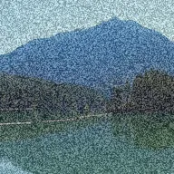

Statische ruis

Flikkerende grijze ruis, zoals een tv zonder signaal.
Instellingen
| Instelling | Type | Bereik | Standaard |
|---|---|---|---|
| Hoeveelheid | Getal | 0 tot 1 | 0.4 |
| Grootte | Getal | 0.5 tot 50 | 2 |

Flikkerende grijze ruis, zoals een tv zonder signaal.
| Instelling | Type | Bereik | Standaard |
|---|---|---|---|
| Hoeveelheid | Getal | 0 tot 1 | 0.4 |
| Grootte | Getal | 0.5 tot 50 | 2 |